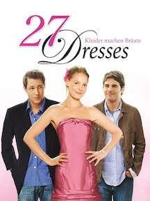

27 Dresses
PG-13 | 2008 | Comedy/Romance | 1h 51m
| Actor |
Character |
| Katherine Heigl |
Jane Nichols |
| James Marsden |
Kevin Doyle |
| Malin Akerman |
Tess Nichols |
| Edward Burns |
George |

In 27 Dresses, Jane Nichols has served as a bridesmaid 27 times, selflessly supporting her friends' weddings while harboring unspoken feelings for her boss, George. Her world unravels when her younger sister Tess becomes engaged to George, and a cynical reporter named Kevin Doyle publishes an article about Jane's extensive bridesmaid wardrobe, leading Jane to reassess her life and relationships.